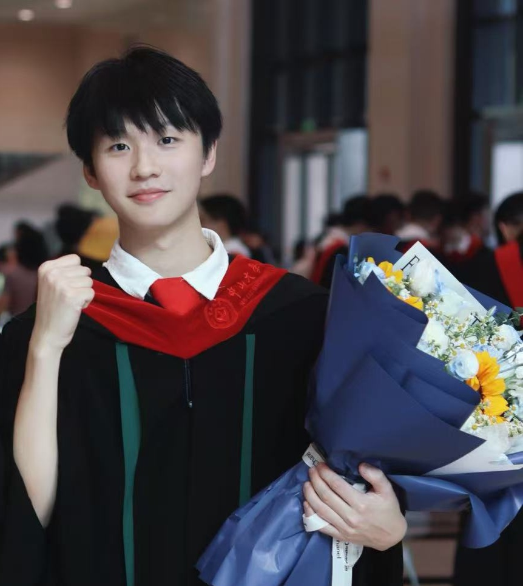

ProEdit: Inversion-based Editing From Prompts Done Right
NeurIPS 2026

Master Student, iSEE Lab
@ SYSU
Advisor: Prof. Wei-Shi Zheng
I am a master student at Sun Yat-sen University (SYSU), iSEE Lab, advised by Prof. Wei-Shi Zheng. Before that, I received my B.E. degree at SYSU in 2025.
My current research interests primarily focus on the following areas:
Feel free to contact me!
2026.07 – Present
Research Topic: Open-Ended General Object Detection with Multimodal Large Models.
Master student in School of Computer Science · 2025.09 – Present
B.Eng. in School of Intelligent Engineering · 2021.09 – 2025.06
NeurIPS 2026
ICCV 2025
* indicates equal contribution.